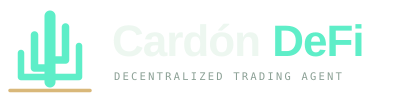

Resistente, sobria, clara.
Cardón DeFi toma su carácter del gran cactus del desierto: no grita ni promete, resiste. Esta página reúne el logo, los colores, las tipografías y la voz.
El cardón y su suelo.
Un tronco y cuatro brazos trazados con una sola línea redondeada, de pie sobre una línea color arena: el desierto. Los brazos desiguales hablan de crecimiento; la línea, de dónde se apoya.



Sí
- Deja alrededor un espacio libre igual al ancho del tronco
- Usa menta sobre fondos oscuros y verde profundo sobre claros
- Escribe el nombre con acento: Cardón DeFi
- Tamaño mínimo: 24 px el símbolo, 120 px el logo completo
No
No lo estires ni lo gires, no cambies sus colores, no le pongas sombras ni contornos, no quites la línea de arena ni lo coloques sobre fotos recargadas. No escribas «Cardon Defi», «CARDÓN» solo ni «CardónDeFi».
Desierto de noche.
Una base oscura ligeramente verde, un color vivo y uno cálido. El menta es para acciones y buenas noticias; el arena, para acentos de marca y avisos; el rojo, solo para pérdidas y errores.
#5eeec8Acciones, datos positivos, logo
#d9b87aAcentos, lemas, avisos
#0a0f0dFondo principal
#111a16Tarjetas y paneles
#26372eBordes y divisiones
#edf7f0Texto principal
#0f6b55Logo sobre fondo claro
#ff7080Pérdidas y errores
Una voz para hablar, otra para contar.
Cardón DeFi
Titulares y texto corrido en la web. Pesos 400 a 700, interletra apretada en tamaños grandes.
$1,248.60 · DOT/USDC
Cifras, etiquetas y toda la interfaz de la app. Los números se alinean y nada salta cuando cambian.
Habla claro y no promete lo que no puede cumplir.
| Decimos | No decimos |
|---|---|
| «Tu wallet, tu nube, tus reglas.» | «Deja tu dinero con nosotros.» |
| «Vende solo por encima de tu suelo de ganancia.» | «Rendimientos garantizados.» «Ingresos pasivos.» |
| «Puedes perder dinero.» | «Sin riesgo.» «To the moon.» |
| «El agente esperó: el precio no llegó al disparo.» | Jerga sin explicar, mayúsculas alarmistas, cohetes. |
Lema: «Agente de Trading Descentralizado» en español y «Decentralized Trading Agent» en inglés. El nombre nunca se traduce.